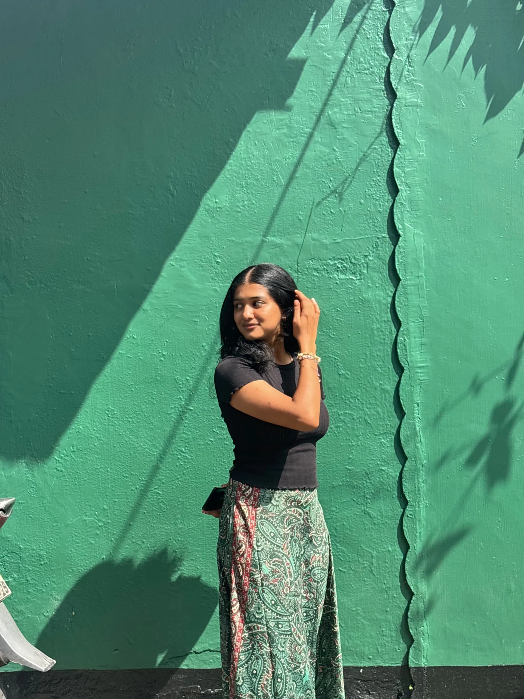
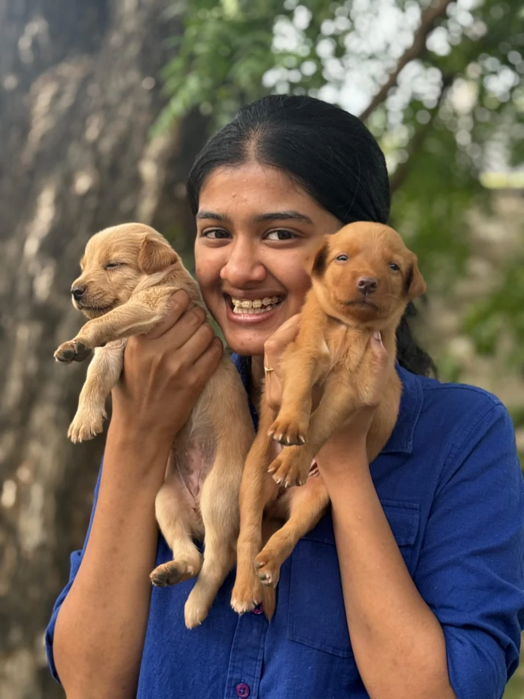
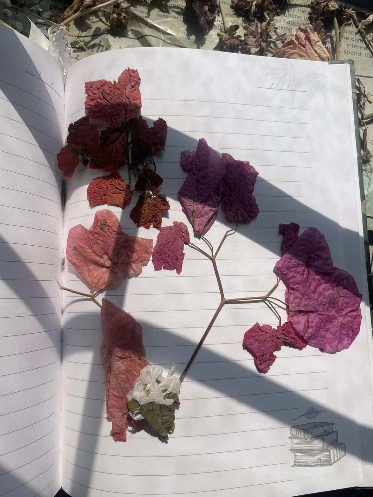
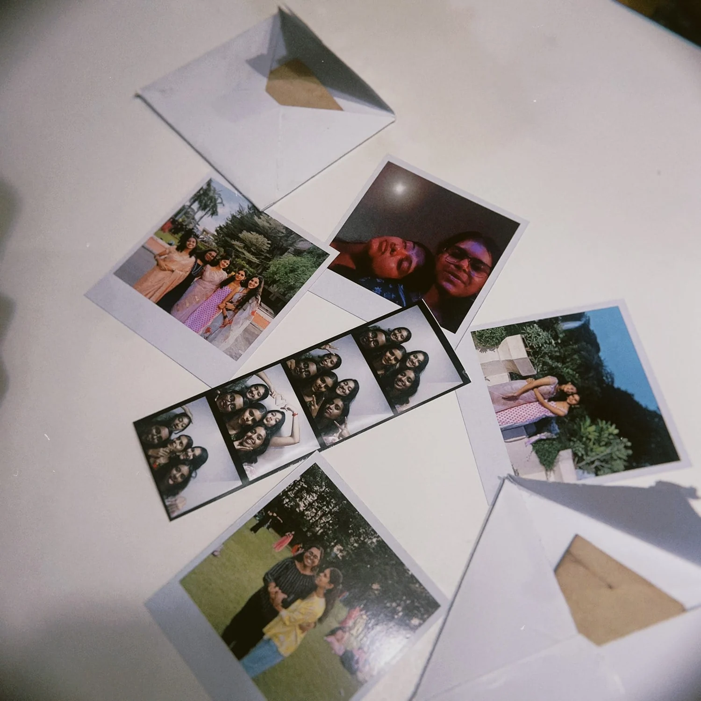

A LITTLE BEYOND THE PORTFOLIO ✳
Hi, I'm Anna.
Curious by default.
I'm an Industrial Design student, a curious observer and a collector of little details. I love filter coffee just as much as iced coffee, finance as much as form, and experimenting with things I haven't tried before. I can spend an unreasonable amount of time shade-matching paint or concealer, noticing colours, textures and tiny differences. Design is one way I make sense of the world — curiosity is the bigger thing.
Back to the work ↗currently collecting little moments ✿

A little nudge beyond my usual routine.01 / OUT OF OFFICE
Trying things before I feel ready. ✳
01 / THE PERSON
Not just the projects.
A few things that make me, me.I like observing how people interact with the world around them. Sometimes that turns into a design question; sometimes it stays as a little note, a photograph or a conversation I keep thinking about.
I love experimenting — with materials, tools, recipes, ideas and sometimes a new route home. I notice small things, ask a lot of questions and enjoy learning by actually trying. I used to practise karate, and I still like activities that teach patience, focus and a bit of courage.
02 / LITTLE OBSESSIONS
Things that keep me curious.
My interests don't always sit in the same category. That's kind of the point. A little design, a little finance, a lot of noticing things — and always something new to try.
03 / LITTLE WINDOWS INTO MY WORLD
A few moments I wanted to keep.
Some days it's a place, sometimes it's a tiny detail, sometimes it's just a moment I want to remember. Flip through a little visual diary — use the arrows or pick a dot.






01 / 08
A LITTLE COLLECTION
Places I want to return to. People I want to remember. Flowers I couldn't leave behind. Tiny details that made an ordinary day feel worth keeping.
✳ SUNSET CHASER✿ FLOWER PRESSER↗ ALWAYS WANDERING♡ PEOPLE WATCHER
04 / THIS YEAR, I LEARNT…
A few new tabs opened in my brain.
Some were planned. Some happened because I got curious. A few happened because life said, “well, you're figuring this out now.”
The list is always growing ↗How toys reach production
Ideation, prototyping, costing, BIS standards, quality checks and manufacturing.
Understanding the stock market
Investing, risk, where to invest and why money deserves curiosity too.
How to ride a skateboard
Getting on, finding balance and actually using one.
How to cut my own hair
A new life skill and an experiment in self-reliance. 😂
Managing a team of 100+
Delegation, coordination, patience and moving towards one goal.
Learning Rhino
Exploring 3D modelling and learning a new design tool.
Using AI more thoughtfully
Research, brainstorming, prototyping and experimenting with technology.
Letting things take time
People, processes and life don't always move at my pace.
Making murukku
Adding a little traditional cooking to my skill set.
Tying a jasmine garland
An art that takes patience, practice and finger coordination.
Building a websiteMaking digital prototypesWriting cold emailsPitching an ideaTravelling independentlyWorking across disciplinesTurning observations into projects
05 / RIGHT NOW
Learning, making, figuring things out.
At the moment, I'm working towards making Orbit a functional hospital workflow product and exploring an inclusive play intervention. Both projects are teaching me to think beyond the individual object or screen and consider the people, systems and contexts around them.
I'm interested in the space where research, design, technology and business meet — and in the kind of work that makes a real difference to someone's everyday experience.
THAT'S A LITTLE MORE ABOUT ME